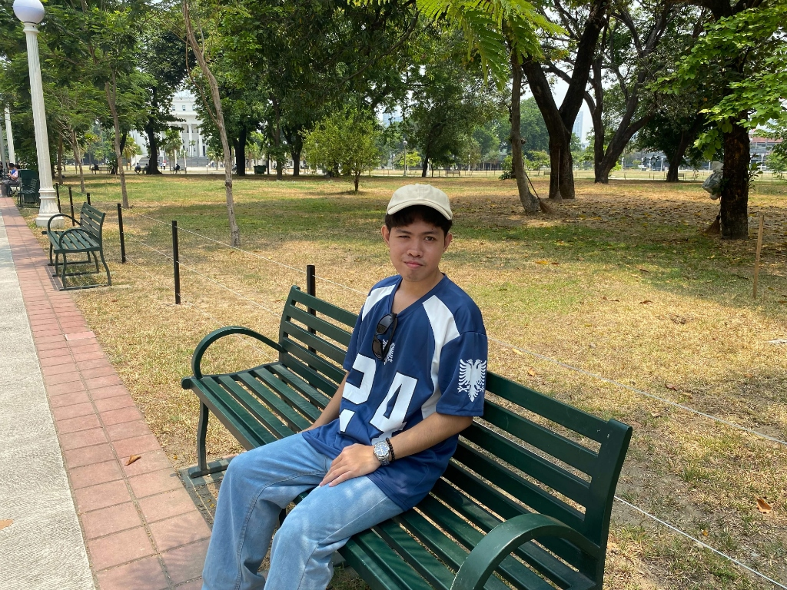
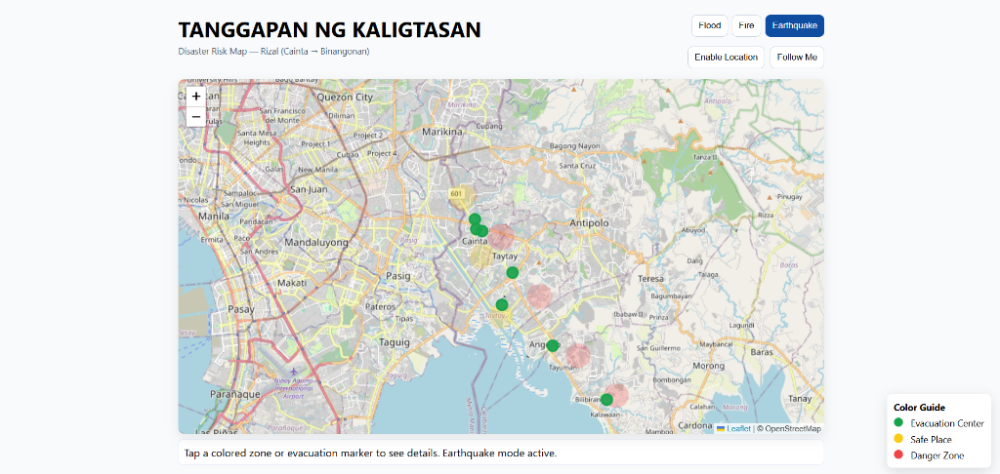
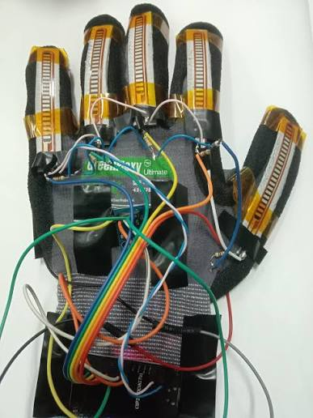
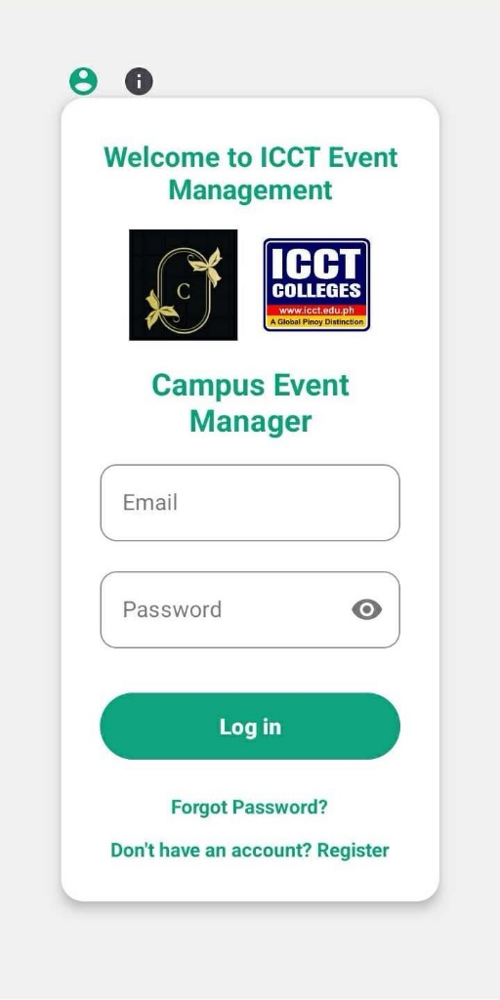

Donor.
4th-year Computer Engineering student at ICCT Colleges Cainta Campus. Building responsive web applications and embedded IoT solutions with clean, straightforward code.

About Me.
I am a 4th-year Computer Engineering student at ICCT Colleges Cainta Campus, currently residing in Binangonan, Rizal. I have a strong passion for software development, modern web applications, and embedded IoT hardware systems. I enjoy creating practical solutions by writing clean, straightforward code and continuously exploring new technologies.
Throughout my studies, I have gained hands-on experience building web apps with TypeScript, mobile applications in Android Studio with Kotlin and Firebase, and programming microcontrollers like the ESP32 and Arduino with various sensors and communication protocols.
Technical Competencies.
software & web
- typescript
- kotlin
- java / oop
- c / c++
- python
- sql
- git / github
mobile, cloud & design
- android studio
- firebase auth
- firebase cloud messaging
- figma ui/ux
- system architecture
- uml modeling
hardware & embedded iot
- esp32
- arduino
- embedded c / c++
- oled displays
- circuit schematics
- digital logic
ai-assisted development & tools
- gemini
- chatgpt
- antigravity
Works.
TANGGAPAN NG KALIGTASAN
Disaster Risk Map — Rizal (Cainta → Binangonan)
This web application was engineered to help individuals and families who do not know where to seek refuge or take shelter during critical calamities such as floods, fires, or earthquakes.
It provides an interactive, real-time geospatial risk map for communities across Rizal (from Cainta, Taytay, and Angono to Binangonan). Citizens can switch between disaster categories (Flood, Fire, and Earthquake), identify pinpointed evacuation centers and safe zones, recognize high-risk danger zones, and utilize live GPS tracking (Enable Location & Follow Me) to make informed, life-saving decisions during emergencies.

ESP32 TACTILE SMART GLOVE
Custom wearable motion and gesture translation hardware interface.
This wearable motion and gesture translation hardware interface was engineered to bridge human hand kinematics with digital systems, translating finger articulation and spatial orientation into real-time digital commands and readable text.
It captures dynamic finger bend angles using five analog flex sensing resistors paired with a 6-axis MPU6050 IMU (accelerometer & gyroscope) mounted on the dorsum of the hand. Powered by an ESP32 DevKit V1 running embedded C/C++ firmware, the system processes multi-channel analog-to-digital conversions, calculates spatial pitch, roll, and yaw, and outputs diagnostic telemetry directly to an I2C LCD screen. Engineered for assistive sign language translation, low-latency teleoperated robotic arm control, and spatial VR simulations without camera occlusion.

PROJECT NEXUS (CAMPUS EVENT MANAGER)
Comprehensive mobile and backend ecosystem designed for automated event management and real-time coordination.
This comprehensive mobile application and cloud backend ecosystem was engineered to eliminate paper-based logs, long registration queues, and fragmented student attendance during campus gatherings and academic symposiums at ICCT Colleges.
It empowers event coordinators and student attendees with instant QR code verification, offline-first data caching to guarantee uninterrupted check-ins even during network downtime, a live mobile analytics dashboard, and targeted push notifications via Firebase Cloud Messaging (FCM). Built natively with Kotlin and Android Studio, integrated with Firebase Firestore and Firebase Auth, and architected with high-fidelity UI/UX flows prototyped in Figma.

Experience & Education.
Web App & Disaster Risk Systems Developer
Tanggapan ng Kaligtasan Project • Binangonan, RizalArchitected and built the 'Tanggapan ng Kaligtasan' disaster risk mapping web application for Rizal communities (Cainta to Binangonan), integrating interactive geospatial maps, multi-disaster filtering (Flood, Fire, Earthquake), and live location tracking.
Computer Engineering Student Developer
ICCT Colleges Cainta Campus • Cainta, RizalBuilt foundational skills in Object-Oriented Programming (Java, C++), database management with SQL, and developed early software and microcontroller systems that led to full-stack web application development.
B.S. in Computer Engineering (4th Year)
ICCT Colleges Cainta CampusFocused coursework in Embedded Systems, Logic Circuits, Computer Architecture, Data Structures & Algorithms, and Software Development.
Let's connect.
Whether you have an inquiry, feedback, or a collaborative opportunity, feel free to drop me a message.
Binangonan, Rizal, Philippines